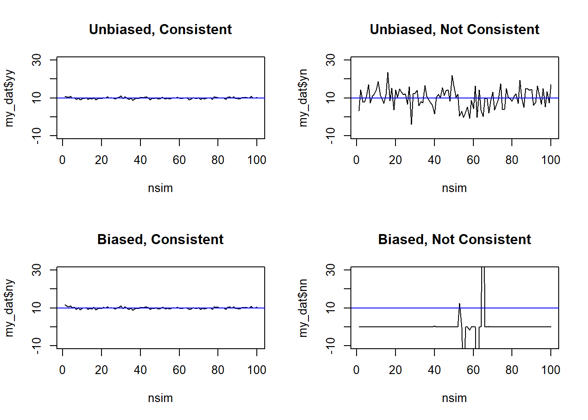

This page is part of the University of Colorado-Anschutz Medical Campus’ BIOS 6618 Recitation collection. To view other questions, you can view the BIOS 6618 Recitation collection page or use the search bar to look for keywords.
Variance of Estimators
First, let’s start by defining some nuanced statistical terminology for an estimand, estimator, and estimate:
Estimand: a precise description of what is measured, it reflects the population-level (e.g., the average weight of all dogs)
Estimator: a method of analysis (e.g., formula, algorithm) to compute an estimate of the estimand using observed data (e.g., the sample mean is \(\bar{X}= \frac{\sum_{i=1}^{n} X_i}{n}\), adding the weights of all \(n\) dogs in our sample and dividing by the sample size \(n\))
Estimate: the numeric value obtained when an estimator is applied to the observed data (e.g., the sample mean may be 21.2 kg)
A humorous way to remember this might be (from Richard McElreath on Twitter):
Meme of estimand, estimator, and estimate
To estimate the population mean, \(\mu\), we can use the estimator of the sample mean, \(\bar{X}\). We may be interested in identifying its sampling distribution for use in statistical inference (e.g., the summarize through an estimate, and potentially to compare between groups, calculate p-values, etc.). We know that based on the central limit theorem, for any distribution with a known mean and variance, \(\bar{X} \sim N(\mu, \frac{\sigma^2}{n})\)).
However, we can note that within our sampling distribution, we have the population-level estimate of the variance, \(\sigma^2\). In some cases, we may assume this variance is “known” (e.g., a \(Z\)-test), but in practice we often do not have enough data or confidence in past studies to make this strong assumption. Instead, we can use \(s^2\) as our estimator. In our slides, we note that the unbiased estimator for the sample variance is \(s^2 = \frac{\sum_{i=1}^{n} (X_i-\bar{X})^2}{n-1}\).
Given that \(s^2\) is an estimator, we can also work to derive the distribution of the sample variance. Here we have to make a few more assumptions than with \(\bar{X}\) (since we don’t have a CLT for variances). If we assume \(X_1,X_2,...,X_{n} \overset{iid}{\sim} N(\mu,\sigma^2)\), then we can show \(\frac{(n-1) s^2}{\sigma^2} \sim \chi^2_{n-1}\). This allows us to further estimate the variance of our sample variance to be \(V(s^2) = \frac{2 \sigma^4}{n-1}\) (in practice, replacing \(\sigma^4\) with \(s^4\)).
This variance of the sample variance can be helpful to understand the reasonable range of variance values we may expect from the population for (1) observing another random sample of \(n\) or (2) if we could observe the entire population. In practice, we often do not look at the variance of the sample variance because we are most interested in the sample mean. We also know some general properties (e.g., larger sample sizes will be more consistent).
Consistency and Bias
Bias is a property of the expected value of a parameter of interest. For example, if our estimate \(\hat{\theta}\) is unbiased, then \(E(\hat{\theta}) = \theta\). For any given estimator (i.e., our equation/algorithm) we can estimate the bias to be \(\text{Bias}(\hat{\theta}) = E(\hat{\theta}) - \theta\). This is really only possible in simulation studies where we can set the truth for \(\theta\).
Consistency relates to the sample size of your sample. It states that as you have more and more data, our estimate should converge in probability to the estimand/truth: \(\hat{\theta}_{n} \overset{p}{\rightarrow} \theta\), where \(n\) is the sample size going to infinity.
It is possible to have situations where you have both, only one, or neither of these properties (although I’d argue some are strange settings). Let’s consider estimating the sample mean for a random sample of \(X_1,X_2,...,X_n\):
Unbiased?
Consistent?
Example Estimator
Yes
Yes
\(\bar{X}\)
Yes
No
\(X_{1}\)
No
Yes
\(\sum_{i=1}^{n} \frac{X_i}{n} + \frac{1}{n}\)
No
No
\(\frac{1}{X_1^3}\)
For bias, we could estimate the theoretical properties given our assumptions (e.g., \(E(\bar{X})=\mu\), \(E(X_1)=\mu\), \(E(\bar{X} + \frac{1}{n})=\mu+\frac{1}{n}\)(although this will be asymptotically unbiased), \(E(\frac{1}{X_1^3}) =\) not trivial and we ignore here, but it isn’t \(\mu\)). Let’s explore some plots of these estimators by simulating across a range of sample sizes for \(N(\mu=10,\sigma=5)\) distribution for consistency:
Code
set.seed(515) # set seed for reproducibilitynsim <-1:100# sample sizes to exploremy_dat <-data.frame( n=nsim, yy=NA, yn=NA, ny=NA, nn=NA) # create data frame to save simulation results in for each unbiased/consistent combinationfor( i in1:length(nsim) ){ n <- nsim[i] simdat <-rnorm(n=nsim, mean=10, sd=5) my_dat$yy[i] <-mean(simdat) my_dat$yn[i] <- simdat[1] my_dat$ny[i] <-mean(simdat) +1/n my_dat$nn[i] <-1/(simdat[1]^3)}par(mfrow=c(2,2)) # create panel figureplot(x=nsim, y=my_dat$yy, type='l', ylim=c(-10, 30), main='Unbiased, Consistent'); abline(h=10, col='blue')plot(x=nsim, y=my_dat$yn, type='l', ylim=c(-10, 30), main='Unbiased, Not Consistent'); abline(h=10, col='blue')plot(x=nsim, y=my_dat$ny, type='l', ylim=c(-10, 30), main='Biased, Consistent'); abline(h=10, col='blue')plot(x=nsim, y=my_dat$nn, type='l', ylim=c(-10, 30), main='Biased, Not Consistent'); abline(h=10, col='blue')

From these plots, we can see that the non-consistent examples never converge to the true parameter value of \(\mu=10\).
Source Code
---title: "Question 1"author: name: Alex Kaizer roles: "Instructor" affiliation: University of Colorado-Anschutz Medical Campustoc: truetoc_float: truetoc-location: leftformat: html: code-fold: show code-overflow: wrap code-tools: true---```{r, echo=F, message=F, warning=F}library(kableExtra)library(dplyr)```This page is part of the University of Colorado-Anschutz Medical Campus' [BIOS 6618 Recitation](/recitation/index.qmd) collection. To view other questions, you can view the [BIOS 6618 Recitation](/recitation/index.qmd) collection page or use the search bar to look for keywords. # Variance of EstimatorsFirst, let's start by defining some nuanced statistical terminology for an *estimand*, *estimator*, and *estimate*: * Estimand: a precise description of what is measured, it reflects the population-level (e.g., the average weight of all dogs)* Estimator: a method of analysis (e.g., formula, algorithm) to compute an estimate of the estimand using observed data (e.g., the sample mean is $\bar{X}= \frac{\sum_{i=1}^{n} X_i}{n}$, adding the weights of all $n$ dogs in our sample and dividing by the sample size $n$)* Estimate: the numeric value obtained when an estimator is applied to the observed data (e.g., the sample mean may be 21.2 kg)A humorous way to remember this might be (from Richard McElreath on Twitter):To estimate the population mean, $\mu$, we can use the estimator of the sample mean, $\bar{X}$. We may be interested in identifying its *sampling distribution* for use in statistical inference (e.g., the summarize through an estimate, and potentially to compare between groups, calculate p-values, etc.). We know that based on the central limit theorem, for any distribution with a known mean and variance, $\bar{X} \sim N(\mu, \frac{\sigma^2}{n})$).However, we can note that within our sampling distribution, we have the population-level estimate of the variance, $\sigma^2$. In some cases, we may assume this variance is "known" (e.g., a $Z$-test), but in practice we often do not have enough data or confidence in past studies to make this strong assumption. Instead, we can use $s^2$ as our estimator. In our slides, we note that the *unbiased* estimator for the sample variance is $s^2 = \frac{\sum_{i=1}^{n} (X_i-\bar{X})^2}{n-1}$.Given that $s^2$ is an estimator, we can also work to derive the distribution of the sample variance. Here we have to make a few more assumptions than with $\bar{X}$ (since we don't have a CLT for variances). If we assume $X_1,X_2,...,X_{n} \overset{iid}{\sim} N(\mu,\sigma^2)$, then we can show $\frac{(n-1) s^2}{\sigma^2} \sim \chi^2_{n-1}$. This allows us to further estimate the variance of our sample variance to be $V(s^2) = \frac{2 \sigma^4}{n-1}$ (in practice, replacing $\sigma^4$ with $s^4$). This variance of the sample variance can be helpful to understand the reasonable range of variance values we may expect from the population for (1) observing another random sample of $n$ or (2) if we could observe the entire population. In practice, we often do not look at the variance of the sample variance because we are most interested in the sample mean. We also know some general properties (e.g., larger sample sizes will be more consistent).# Consistency and Bias**Bias** is a property of the *expected value* of a parameter of interest. For example, if our estimate $\hat{\theta}$ is unbiased, then $E(\hat{\theta}) = \theta$. For any given estimator (i.e., our equation/algorithm) we can estimate the bias to be $\text{Bias}(\hat{\theta}) = E(\hat{\theta}) - \theta$. This is really only possible in simulation studies where we can set the truth for $\theta$.**Consistency** relates to the sample size of your sample. It states that as you have more and more data, our estimate should converge in probability to the estimand/truth: $\hat{\theta}_{n} \overset{p}{\rightarrow} \theta$, where $n$ is the sample size going to infinity.It is possible to have situations where you have both, only one, or neither of these properties (although I'd argue some are strange settings). Let's consider estimating the sample mean for a random sample of $X_1,X_2,...,X_n$:| Unbiased? | Consistent? | Example Estimator ||:---------:|:-----------:|:-----------------:|| Yes | Yes | $\bar{X}$ || Yes | No | $X_{1}$ || No | Yes | $\sum_{i=1}^{n} \frac{X_i}{n} + \frac{1}{n}$ || No | No | $\frac{1}{X_1^3}$ |For bias, we could estimate the theoretical properties given our assumptions (e.g., $E(\bar{X})=\mu$, $E(X_1)=\mu$, $E(\bar{X} + \frac{1}{n})=\mu+\frac{1}{n}$ *(although this will be asymptotically unbiased)*, $E(\frac{1}{X_1^3}) =$ not trivial and we ignore here, but it isn't $\mu$). Let's explore some plots of these estimators by simulating across a range of sample sizes for $N(\mu=10,\sigma=5)$ distribution for consistency:```{r}set.seed(515) # set seed for reproducibilitynsim <-1:100# sample sizes to exploremy_dat <-data.frame( n=nsim, yy=NA, yn=NA, ny=NA, nn=NA) # create data frame to save simulation results in for each unbiased/consistent combinationfor( i in1:length(nsim) ){ n <- nsim[i] simdat <-rnorm(n=nsim, mean=10, sd=5) my_dat$yy[i] <-mean(simdat) my_dat$yn[i] <- simdat[1] my_dat$ny[i] <-mean(simdat) +1/n my_dat$nn[i] <-1/(simdat[1]^3)}par(mfrow=c(2,2)) # create panel figureplot(x=nsim, y=my_dat$yy, type='l', ylim=c(-10, 30), main='Unbiased, Consistent'); abline(h=10, col='blue')plot(x=nsim, y=my_dat$yn, type='l', ylim=c(-10, 30), main='Unbiased, Not Consistent'); abline(h=10, col='blue')plot(x=nsim, y=my_dat$ny, type='l', ylim=c(-10, 30), main='Biased, Consistent'); abline(h=10, col='blue')plot(x=nsim, y=my_dat$nn, type='l', ylim=c(-10, 30), main='Biased, Not Consistent'); abline(h=10, col='blue')```From these plots, we can see that the non-consistent examples never converge to the true parameter value of $\mu=10$.